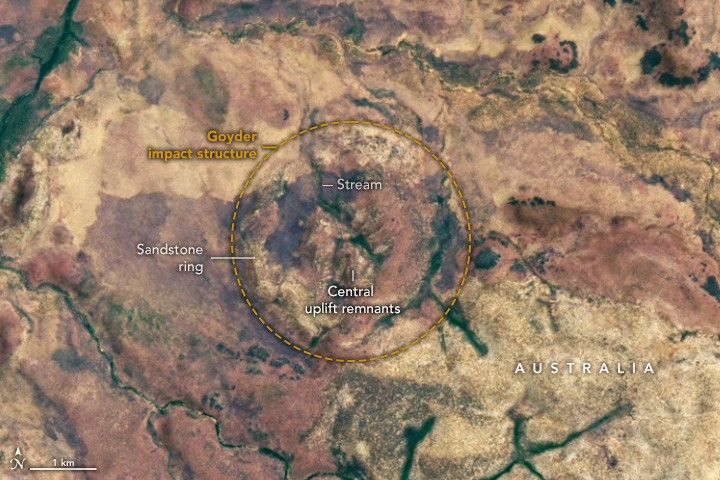

An Impact Crater Hiding in Plain Sight
Of the 190 confirmed impact craters on Earth, some are more recognizable than others.
There is the square-shaped Meteor Crater in Arizona, forged when an iron asteroid smashed into the Colorado Plateau. There is Clearwater West and Clearwater East in northwestern Quebec, created by the one-two punch from a pair of asteroids. Finally, there is Pingualuit Crater in Nunavik Province, which drew an almost perfect circle across the tundra as a result of a meteorite striking the surface at a nearly vertical angle.
The Goyder impact structure in Australia is much subtler. Seen from above, the ancient structure looks like little more than a modest group of hills arrayed in a circular pattern, easy to miss in the shrub-covered, fire-scarred savannas of the Northern Territory. Still, that was enough to capture the attention of Peter Haines, a geologist who first noticed the circular feature in an aerial photograph in the 1990s.
After traveling to the structure and closely scrutinizing it, Haines detailed his findings in the AGSO Journal of Australian Geology & Geophysics, calling it “the remnant of the central uplift of a deeply eroded complex impact crater.” While simple impact craters are typically small and have a smooth interior, complex craters are larger and have a central peak that forms as the ground rebounds during impact.
The OLI (Operational Land Imager) on Landsat 8 captured this image of the Goyder impact structure on November 6, 2024. The image was overlaid on a digital elevation model from the Shuttle Radar Topography Mission (SRTM) to give a sense of the topography. A ring of sandstone and a hilly region in the center of the structure—both thought to be parts of the central uplift—are visible in the center of the image.
The crater’s rim and floor have eroded away, making it difficult to estimate the size of the original crater. However, estimates based on the size of the central uplift suggest that the crater may have been between 7 and 25 kilometers (4 to 16 miles) wide, implying that it might have caused catastrophic levels of damage on impact.
Haines also identified fan-shaped fractures called shatter cones in the center of the structure. These rare geologic features are a telltale sign of past impact because they only form when powerful shock waves barrel through rock.
The date of the impact is uncertain. Based on the ages of the rocks in the area, it may have occurred as recently as the Late Jurassic (about 150 million years ago), but it also could have happened as long ago as the Mesoproterozoic (about 1.4 billion years ago).
NASA’s Planetary Defense Coordination Office has identified 38,310 near-Earth asteroids, including 873 that are larger than 1 kilometer wide. As of April 30, 2025, the office had tracked 160 that had passed closer to Earth than the Moon in the past 365 days and nine in the past 30 days. More than 100 tons of dust- and sand-sized particles bombard the Earth each day.